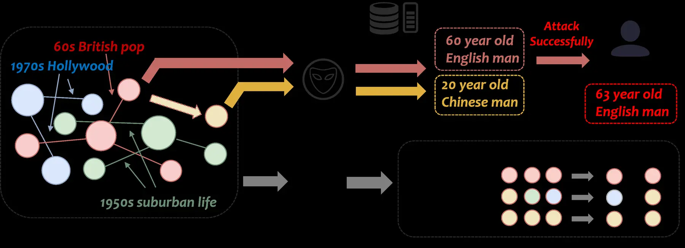
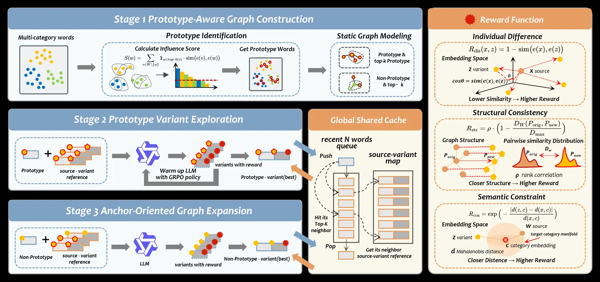

Build the graph
Identify high-influence prototype words and precompute a static vocabulary-level semantic neighbor graph.
Shift semantics. Preserve relations. Protect recommendations.
LLM-enhanced recommenders benefit from semantic item embeddings, but those embeddings can expose sensitive textual attributes through inversion attacks. PGPO moves beyond preserving literal meaning: it protects individual content while retaining the relative semantic topology that recommendation models actually need.
Induce sufficient semantic shift for privacy while preserving local neighborhood order and inter-item relationships for utility.
Semantic embeddings can make item side information useful to downstream recommenders, yet the same representations may reveal their sources. Conventional word-level perturbations treat items independently and can shatter the semantic neighborhoods that connect cold and popular items.
PGPO instead reconstructs a usable semantic skeleton: variants move away from their source words, while their relative relationships remain available to the recommender.

PGPO concentrates optimization on structurally influential prototypes, then propagates their learned mappings from the semantic core to the full vocabulary.
Identify high-influence prototype words and precompute a static vocabulary-level semantic neighbor graph.
Use GRPO to learn privacy-preserving prototype variants that form stable structural anchors.
Condition on finalized neighbors and progressively propagate the anchored structure to non-prototype words.

Push each generated variant away from its source embedding to weaken local reconstruction and re-identification.
Preserve neighborhood rankings and pairwise similarity distributions across original and obfuscated spaces.
Keep variants inside category-specific manifolds, preventing invalid or degenerate shortcuts during exploration.
Experiments on MovieLens-1M and Amazon-Book cover variant quality, six downstream recommenders, embedding inversion, and a white-box Replay-MLE attacker.
Highest local structural correlation among compared obfuscation methods.
Maintains relational topology under strong semantic displacement.
Versus raw descriptions for traditional collaborative filtering models.
All evaluated obfuscation methods substantially reduce inversion success; PGPO retains stronger utility.
The visual separation of method-specific embeddings shows strong semantic displacement. PGPO's recommendation performance indicates that the relational structure needed downstream remains usable.
The repository includes preprocessing, prototype extraction, GRPO training, progressive generation, recommendation backends, Vec2Text-style inversion, and Replay-MLE source re-identification.
Preliminary citation. The official BibTeX will be updated when the paper is released on arXiv and in the proceedings.
@inproceedings{lin2026pgpo,
title = {PGPO: Prototype-Guided Progressive Obfuscation for
Privacy-Preserving LLM-Enhanced Recommendation},
author = {Lin, Shengxiang and Su, Jiajie and Zhou, Pengyang and
Chen, Xiang and Zheng, Xiaolin and Tian, Feng and Chen, Chaochao},
booktitle = {Proceedings of EMNLP},
year = {2026}
}